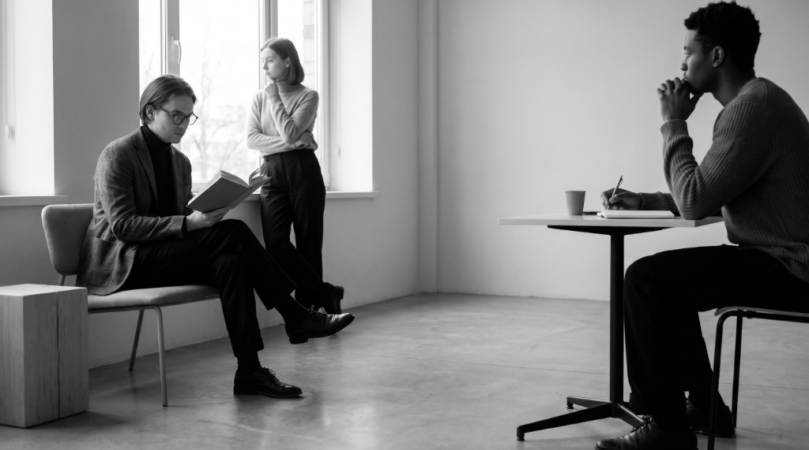

Século XIX
Século XIX
Filosofia em movimento
Ideias que
atravessam
o tempo.
Um encontro entre vozes antigas e contemporâneas — pensamentos que ainda nos ensinam a olhar, questionar e existir.
01
Vozes antigas
Sócrates · Sêneca · Hipátia
02
Vozes contemporâneas
Arendt · Beauvoir · Byung-Chul Han
∞

Pensamento em destaque“Pensar é dialogar silenciosamente consigo mesmo.”
Platão
antes
Conhece-te
agora
Questiona-te
Arquivo de pensadores · 01—06
Vozes que atravessam
gerações.
Seis perspectivas sobre a vida, a verdade e o mundo — reunidas para serem lidas sem pressa.
Século XIX
 Roma antiga
Roma antiga
 Contemporânea
Contemporânea
03
Dora Castellar
“Mesmo que não seja sua luta, ambientes doentios ainda ferem a alma.”
Aprofunde-se ↗ Contemporâneo
Contemporâneo
 Contemporânea
Contemporânea
 Contemporânea
Contemporânea
06
Márcia Tiburi
“O pensamento crítico incomoda porque questiona o que parece normal.”
Aprofunde-se ↗